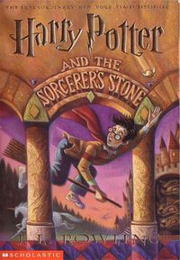
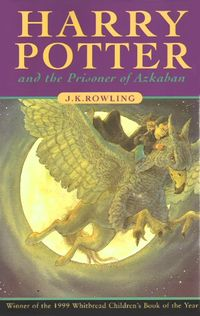
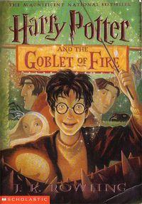
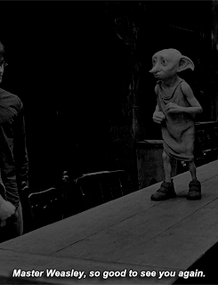

soccer's stone
Harry Potter is the most miserable, lonely boy you can imagine. He’s shunned by his relatives, the Dursley’s, that have raised him since he was an infant
.... chamber of secrets
It’s been another long summer at the Dursley’s for Harry Potter. He can’t wait to get back to Hogwarts and is counting down the days until he can return.
....
prisnor of askaban
Harry starts off his third year at Hogwarts rather eventfully when he inadvertently blows up his Aunt Marge, goes on the run, and is then personally
.... globlet of fire
arry can’t believe it. The Weasley’s have invited him to the Quidditch World Cup, which means he’ll get to leave the Dursley’s house early
.... order of phenoix
It's been another long, hot summer at the Dursleys' for Harry Potter. Having spent most of it in an adolescent "funk" of depression and
....
half blood prince
Harry's sixth year at Hogwarts opens to find him more mellow and grown up than ever. The death of Sirius Black has left an indelible mark on him,
....
DOBBY
no book is available doobly is an elf whre harry potter free the dobby by his sock and mad dobby a free elf at last dobby and harry potter friends
.... Deathly hallows
It’s all over between Harry and Voldemort with just one spell. Harry is left alive, the true master of the Hallows, and Voldemort is killed
....
DOBBY
no book is available doobly is an elf whre harry potter free the dobby by his sock and mad dobby a free elf at last dobby and harry potter friends
....